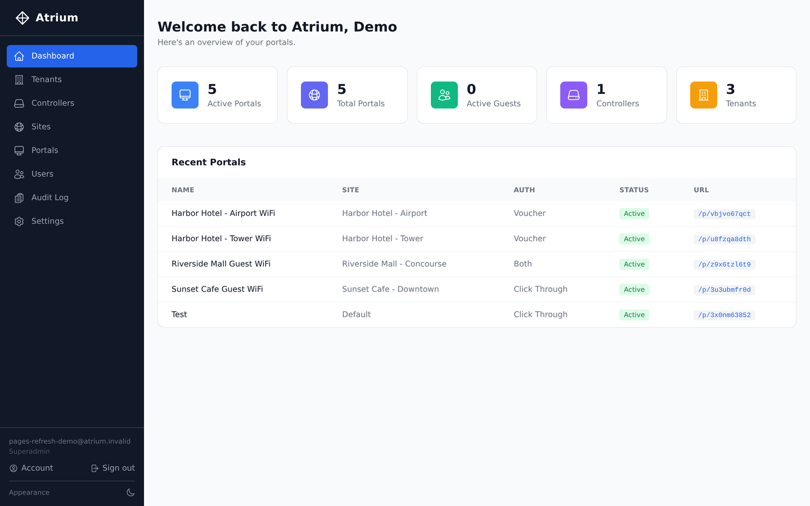
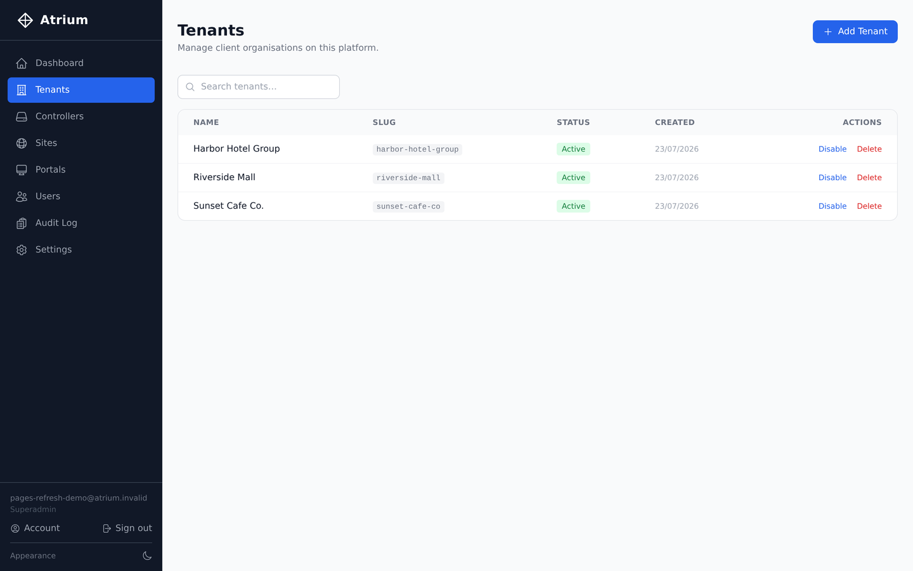
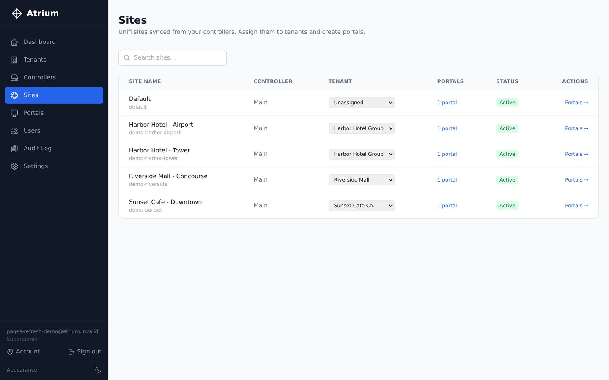
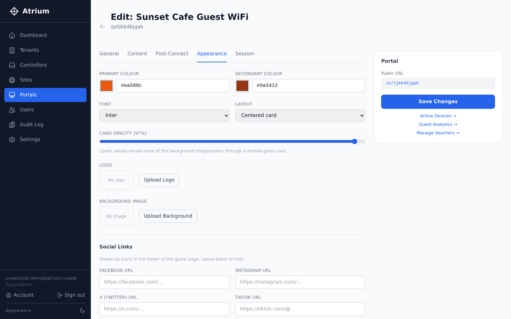
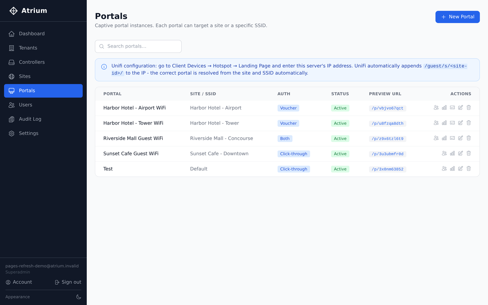
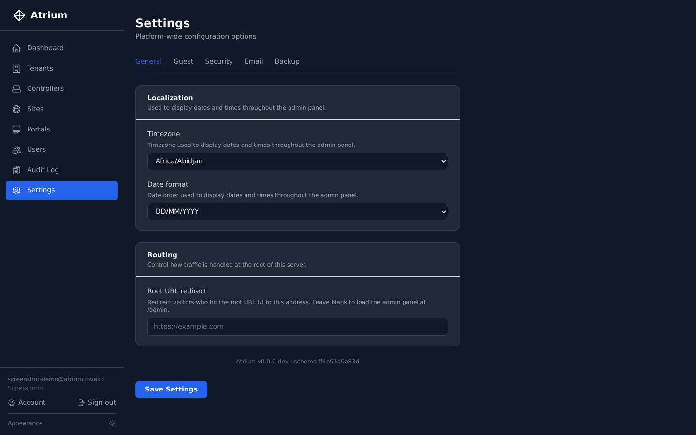

Atrium is a self-hosted admin panel for running branded guest WiFi captive portals across multiple tenants and sites on a UniFi network - from a single install you control.
Built for MSPs and multi-site operators managing UniFi networks for clients - or for anyone who just wants proper guest WiFi without duct-taping it together.
Separate tenants, sites, and portals under one install. Keep every client's config, branding, and data cleanly isolated.
Per-portal branding, colors, logos, backgrounds, and a customizable post-connect page - no code required.
See active devices live, manually authorize, reconnect, or deauthorize, and issue vouchers for time-limited access.
Per-portal session history and usage trends, so you can actually answer "how many guests did we get."
Role-based access control with two-factor authentication, so client-facing staff only see what they should.
Every admin action recorded - who changed what, and when.
Configurable timezone and date format, applied consistently across the whole admin panel.
A proper dark theme, not an afterthought.
Encrypted full-site backup covering settings, content, and uploads - restore onto a fresh install in minutes.

Active portals, live guest counts, and recent activity across every tenant - at a glance, the moment you log in.

Running guest WiFi for multiple clients as an MSP? Each one is a fully isolated tenant - their own sites, portals, and users, all under a single install you maintain.

A tenant isn't limited to one site - assign as many UniFi sites to them as they have locations, each with its own portal, branding, and guest data.

Colors, fonts, layout, logo, and background - tailor the guest login experience per portal, per tenant, without touching code.

Search and manage every captive portal instance across every site, with direct links to guests, analytics, and vouchers.

Timezone, date format, routing, guest defaults, security, and email - plus a dark theme that's genuinely easy on the eyes.
Docker Compose, published images, five minutes. Your data stays on your server.
Read the install guide →